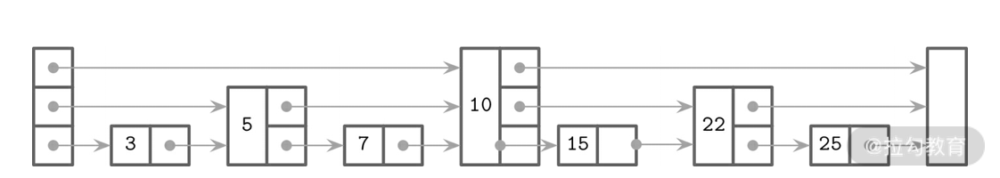

- 00 开篇词 吃透分布式数据库，提升职场竞争力.md.html
- 01 导论：什么是分布式数据库？聊聊它的前世今生.md.html
- 02 SQL vs NoSQL：一次搞清楚五花八门的“SQL”.md.html
- 03 数据分片：如何存储超大规模的数据？.md.html
- 04 数据复制：如何保证数据在分布式场景下的高可用？.md.html
- 05 一致性与 CAP 模型：为什么需要分布式一致性？.md.html
- 06 实践：设计一个最简单的分布式数据库.md.html
- 07 概要：什么是存储引擎，为什么需要了解它？.md.html
- 08 分布式索引：如何在集群中快速定位数据？.md.html
- 09 日志型存储：为什么选择它作为底层存储？.md.html
- 10 事务处理与恢复（上）：数据库崩溃后如何保证数据不丢失？.md.html
- 11 事务处理与恢复（下）：如何控制并发事务？.md.html
- 12 引擎拓展：解读当前流行的分布式存储引擎.md.html
- 13 概要：分布式系统都要解决哪些问题？.md.html
- 14 错误侦测：如何保证分布式系统稳定？.md.html
- 15 领导选举：如何在分布式系统内安全地协调操作？.md.html
- 16 再谈一致性：除了 CAP 之外的一致性模型还有哪些？.md.html
- 17 数据可靠传播：反熵理论如何帮助数据库可靠工作？.md.html
- 18 分布式事务（上）：除了 XA，还有哪些原子提交算法吗？.md.html
- 19 分布式事务（下）：Spanner 与 Calvin 的巅峰对决.md.html
- 20 共识算法：一次性说清楚 Paxos、Raft 等算法的区别.md.html
- 21 知识串讲：如何取得性能和可扩展性的平衡？.md.html
- 22 发展与局限：传统数据库在分布式领域的探索.md.html
- 23 数据库中间件：传统数据库向分布式数据库的过渡.md.html
- 24 现状解读：分布式数据库的最新发展情况.md.html
- 加餐1 概念解析：云原生、HTAP、图与内存数据库.md.html
- 加餐2 数据库选型：我们该用什么分布式数据库？.md.html
- 捐赠
08 分布式索引：如何在集群中快速定位数据？
索引是数据检错的关键技术，那么在分布式数据库这种体量的数据容量下，如单机数据那样进行数据表全量扫描是非常不现实的，故分布式存储引擎的关键就是要通过索引查找目标数据。
由于索引在不同的数据库概念里内涵是非常不同的，故本讲首先会定义我们要讨论的索引的内涵；接着会描述数据库的读取路径，从中可以观察到主要索引的使用模式；而后会重点介绍磁盘上与内存中的索引结构；最后会谈谈非主键索引，即二级索引的意义和主要实现形式。
那么，让我们从什么是分布式索引说起。
说到分布式索引时，我们在谈论什么？
首先，我要说明一下谈到分布式索引，需要了解什么样的内容。通过上一讲的学习，你已经知道存储引擎中包含数据文件和索引文件，同时索引文件中又有索引组织表这种主要的形式。目前世界上主要的分布式数据库的数据存储形式，就是围绕着索引而设计的。
为什么会这样呢？
由于分布式数据库的数据被分散在多个节点上，当查询请求到达服务端时，目标数据有极大的概率并不在该节点上，需要进行一次甚至多次远程调用才可查询到数据。由于以上的原因，在设计分布式数据库存储引擎时，我们更希望采用含有索引的数据表，从而减少查询的延迟。
这同时暗含了，大部分分布式数据库的场景是为查询服务的。数据库牺牲了部分写入的性能，在存入数据的时候同时生成索引结构。故分布式数据库的核心是以提供数据检索服务为主，数据写入要服务于数据查询。从这个意义上说，分布式索引就是数据存储的主要形式。
本讲会以 NewSQL 和 Cassandra 为代表，介绍典型的 NoSQL 的存储引擎中的主要技术，力图帮助你理解此类数据库中存储引擎检索数据的路径。
读取路径
掌握分布式数据库存储引擎，一般需要明确其写入路径与读取路径。但如上文讨论的那样，写入是严重依赖读取的，故明确读取路径我们就可以指明写入的规则。
因此这一部分，我们先来明确存储引擎是如何处理查询请求的。一般的规则如下：
- 寻找分片和目标节点；
- 检查数据是否在缓存与缓冲中；
- 检查数据是否在磁盘文件中；
- 合并结果。
第一步就是要查找数据在分布式系统的哪个目标节点上。严格说，这一步并不是存储引擎所囊括的部分，但为了表述清楚，我们也将它加入读取路径中来。由于分布式数据库采用分片技术来分散数据，那么查询条件中如果有分片键，就可以应用分片算法来计算出分片，也就是目标节点所在的位置；而如果不包含分片键，就需要“二级索引”来帮忙寻找分片键了，之后的逻辑与使用分片键查找就相似了。
第二步，既然确定了所在节点，那么剩下的就交给存储引擎了。首先需要在缓存（Cache）中进行查找。缓存包含数据缓存或行缓存，其中包含真实的数据，用于快速检索经常访问的数据，一般元数据和静态配置数据都会放在数据缓存里面。而后再缓冲查找数据，缓冲是为了批量写入数据而预留的一段内存空间，当写满缓冲后，数据会被刷入磁盘中，所以会有部分数据存在缓冲之中。
第三步，确定了数据并不在内存中，这时就需要检查磁盘了。我们需要在具有索引的数据文件内查找响应的数据。通过之前的学习我们可以知道，每个数据文件都有主键索引，可以直接在其中查找数据。但是，存储引擎为了写入性能，会把数据拆分在众多的数据文件内部。所以我们需要在一系列文件中去查找数据，即使有索引的加成，查找起来的速度也不是能够令人满意的。这个时候我们可以引入布隆过滤，来快速地定位目标文件，提高查询效率。
最后一步是对结果进行归并。根据执行层的不同需求，这里可以马上返回部分匹配结果，也可以一次性返回全部结果。
现在我们已经勾勒出存储引擎的一个完整的读取路径，可以看到路径上一些关键技术是保证数据查询与读取的关键点。下面我们就分别介绍其中所涉及的关键技术。
索引数据表
我在前文提到过，含有索引的数据表有索引组织表和哈希组织表。其实，我们在分布式数据库中最常见的是 Google 的 BigTable 论文所提到的 SSTable（排序字符串表）。
Google 论文中的原始描述为：SSTable 用于 BigTable 内部数据存储。SSTable 文件是一个排序的、不可变的、持久化的键值对结构，其中键值对可以是任意字节的字符串，支持使用指定键来查找值，或通过给定键范围遍历所有的键值对。每个 SSTable 文件包含一系列的块。SSTable 文件中的块索引（这些块索引通常保存在文件尾部区域）用于定位块，这些块索引在 SSTable 文件被打开时加载到内存。在查找时首先从内存中的索引二分查找找到块，然后一次磁盘寻道即可读取到相应的块。另一种方式是将 SSTable 文件完全加载到内存，从而在查找和扫描中就不需要读取磁盘。
从上面的描述看，我们会发现这些键值对是按照键进行排序的，而且一旦写入就不可变。数据引擎支持根据特定键查询，或进行范围扫描。同时，索引为稀疏索引，它只定位到数据块。查到块后，需要顺序扫描块内部，从而获取目标数据。
下面就是 RocksDB 的 SSTable 结构，可以看到数据是放在前面，后索引作为 metadata 放在文件尾部，甚至 meta 的索引也是放在整个 meta 结构的尾部。
<beginning_of_file>
[data block 1]
[data block 2]
...
[data block N]
[meta block 1: filter block]
[meta block 2: index block]
[meta block 3: compression dictionary block]
[meta block 4: range deletion block]
[meta block 5: stats block]
...
[meta block K: future extended block]
[metaindex block]
[Footer]
<end_of_file>
当然 SSTable 的实现并不一定是通过一个文件，不同的存储引擎会采用不一样的策略去实现它。有的是使用一个文件，如 BigTable 论文中描述的那样，将数据放置在文件开始的部分，索引放在文件结尾。或者将数据和索引分开，放置在不同的文件中。
数据是按照键的顺序放置的，所以不论索引的实现形式如何，数据文件本身是支持范围扫描的。即使使用没有规律的哈希表，数据部分也可以正常支持范围扫描。
这里要注意，SSTable 是不可变的，也就是输入一旦写入是不可以更改的，而修改和删除操作一般也是以写入的形式进行的。这就需要进行合并（Compaction），将对同一个数据的操作合并为最终的结果。这个过程类似于上文中数据库面临故障崩溃后恢复的过程，其中日志回放与合并的基本思想是相同的。关于 SSTable 的详细操作，我们会在 LSM 树这种存储引擎的介绍中详细说明。
当然索引数据表的实现方式不仅仅有 SSTable 一种，对数据库索引有所了解的朋友应该都知道，B 树家族在索引领域扮演着举足轻重的角色。原因是 B 树的每个节点可以有多个数据，所以可以在高度与宽度上进行平衡，从而有效降低磁盘寻道次数。
但是对 B 树的更新代价是非常高的，故分布式数据库为了写入高效会采用一系列优化手段去提高更新 B 树的效率。这里我们以 MongoDB 的 WiredTiger 存储引擎为例，来介绍其中的一个优化手段。
这个优化方式就是缓存最近的对索引的操作，而后将操作固化到磁盘中。WiredTiger 使用 B 树来存储数据，在内存页中，B 树节点带有一个修改缓冲，这个缓冲保存的一个指向磁盘原始数据的引用。而后，在读取流程中，原始磁盘数据结合内存缓冲数据后，再返回给用户。这么做的好处是，数据的刷新和内存页更新都是由后台线程完成，不会去阻塞读写操作。
以上就是两种带有索引性质的数据表实现的逻辑，从中可以看到提高写入速度的关键点，不是采用顺序的形式写入，就是缓存随机写入，从而转变为顺序写入。
以上介绍的两种数据表都包含内存中的缓冲结构，用以应对内存与磁盘两种设备写入速度差的问题，我在这一讲的后面将会详细介绍其中使用的数据结构。
下面我们再来看看内存缓冲。
内存缓冲
目前有很多种不同的数据结构可以在内存中存储有序的数据。在分布式数据库的存储引擎中，有一种结构因其简单而被广泛地使用，那就是跳表（SkipList）。
跳表的优势在于其实现难度比简单的链表高不了多少，但是其时间复杂度可以接近负载平衡的搜索树结构。
跳表在插入和更新时避免对节点做旋转或替换，而是使用了随机平衡的概念来使整个表平衡。跳表由一系列节点组成，它们又由不同的高度组成。连续访问高度较高的节点可以跳过高度较低的节点，有点像蜘蛛侠利用高楼在城市内快速移动一样，这也就是跳表名称的来源。现在我们用一个例子来说明跳表的算法细节。请看下面的图片。

如果我们以寻找 15 为例来说明跳表的查找顺序。
- 首先查找跳表中高度最高的节点，从图中可以看到是10。
- 目标节点 15 比 10 大，从当前高度，也就是最高的高度，向后找没有任何节点，这个时候需要降低一个高度。
- 高度降低后，找到了节点 22，它比 15 要大，这个时候我们又回到了 10 节点，且要继续降低高度。
- 现在降低到了最低，而后顺利地找到了 15。
如果节点需要插入、删除和修改。就需要进行树的平衡，这个时候需要将节点在不同高度上移动，而且高度也会随着节点的数量而变化。要怎么决定变化的数量呢？答案其实很简单，使用随机数来决定这些变量。随机数虽然不是严格均分数据，但是可以做到相对均匀，且代价很小。这也是该算法被广泛使用的原因：用比较小的代价去实现较好的结果，简而言之，其通入产出比非常可观。
以上就是内存中常用的快速搜索数据结构，那么我们如何判断数据在哪个磁盘文件中呢？答案就是使用布隆过滤。
布隆过滤
以上介绍的内容包含了如何在数据文件以及在数据文件缓冲里查找数据。在查询路径中，我们介绍了，除了向所有数据文件请求查询（也被称作读放大）外，还可以利用布隆过滤快速定位目标数据文件。
布隆过滤的原理是，我们有一个非常大的位数组，首先初始化里面所有的值为 0；而后对数据中的键做哈希转换，将结果对应的二进制表示形式映射到这个位数组里面，这样有一部分 0 转为 1；然后将数据表中所有建都如此映射进去。
查找的时候，将查询条件传入的键也进行类似的哈希转换，而后比较其中的 1 是否与数组中的匹配，如果匹配，说明键有可能在这个数据表中。
可以看到，这个算法是一个近似算法，存在误判的可能。也就是所有位置都是 1，但是键也可能不在数据表内，而这些 1 是由于别的键计算产生的。
但是在查找数据文件的场景中，这个缺陷可以忽略。因为如果布隆过滤判断失败，也只是多浪费一些时间在数据表中查找，从而退化为读放大场景，并不会产生误读的情况。
布隆过滤的原理简单易懂，它对于 LSM 树存储引擎下所产生的大量 SSTable 的检索很有帮助，是重要的优化查询的手段。
二级索引
我以上谈到的所有查询方式都是基于主键索引，但是在真实的场景下，非主键经常需要作为查询条件。这个时候就引入了二级索引的概念。
二级索引一般都是稀疏索引，也就是索引与数据是分离的。索引的结果一般保存的是主键，而后根据主键去查找数据。这在分布式场景下有比较明显的性能问题，因为索引结果所在的节点很可能与数据不在一个节点上。
以上问题的一个可行解决方案是以二级索引的结果（也就是主键）来分散索引数据，也就是在数据表创建时，同时创建二级索引。Apache Cassandra 的 SASI 在这方面就是一个很好的例子。它绑定在 SSTable 的生命周期上，在内存缓存刷新或是在数据合并时，二级索引就伴随着创建了。这一定程度上让稀疏的索引有了一定亲和性。
如果要使用键值对实现二级索引，那么索引结果会有如下几种组合方式。
- 急迫模式：将索引结果快速合并到一个 value 中，而后一次查询就可以查到所以结果。
- 正常模式：使用多个键值对保留数据。
- 键组合模式：把索引与结果全都放在 key 上，value 是空的。
总体来说，三种模式读取性能接近，但急迫模式的写入性能会低一些。但是对于不同的 key-value 底层实现，其性能会有差别，比如 wisckey（将在第 11 讲中介绍）实现的键值分离模式，使用组合模式就有意义。同时由于键组合模式比较简单，且适合键扫描算法的实现，故是一种比较常见二级索引形式。
总结
本讲内容就介绍到这里了。这一讲我们首先说明了分布式索引的概念，实际上它就是分布式数据库存储引擎中用来存储数据的所有技术的总称；而后我介绍了存储引擎的查询路径，帮你在心中建立起存储引擎处理查询的整体概念；最后我又分别介绍了影响查询路径的多个关键技术，并给出了实际的案例。
© 2019 - 2023 Liangliang Lee. Powered by gin and hexo-theme-book.